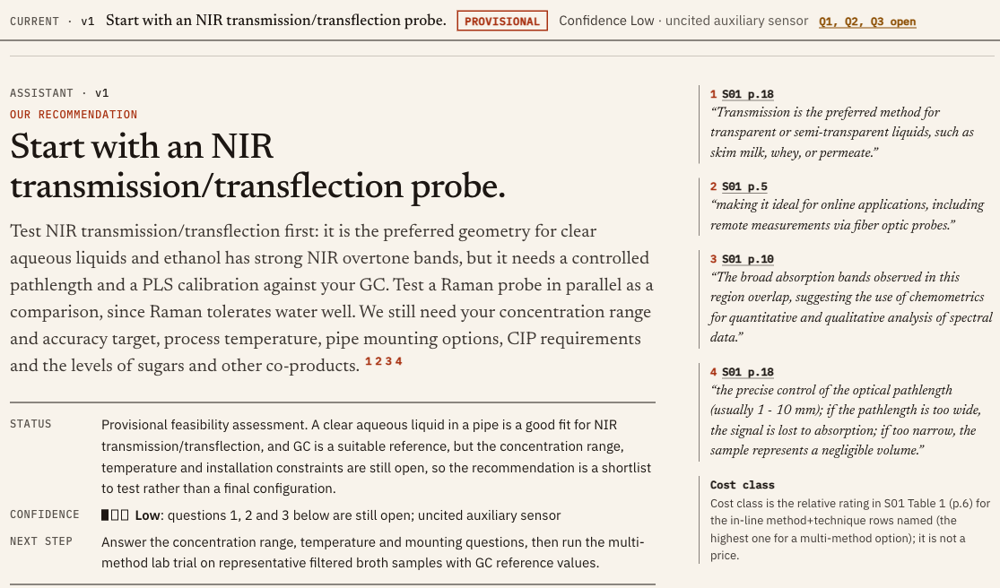
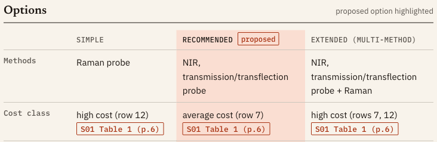
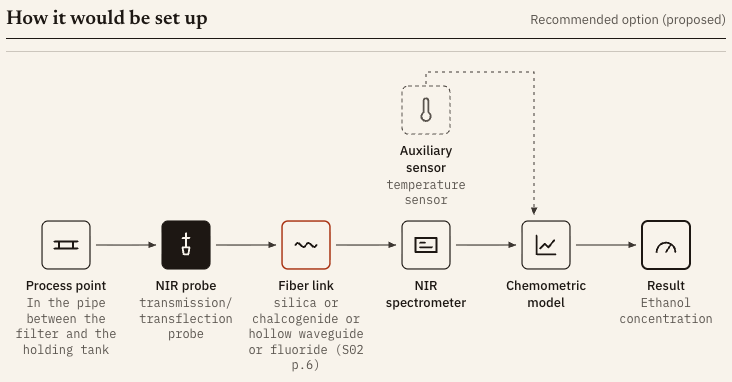

Art Fiber Systems challenge · Team Helios
AFS Spectroscopy Assistant
From an in-line spectroscopy enquiry to a cited first technical assessment, with every quote checked against its page.
Team Helios · October 2026
The problem
A good first answer is hard to write, and easy to get wrong
- Customers ask: “we want to follow X in our process. Which method and probe should we test first?”
- A useful first answer screens UV-Vis, NIR, MIR, Raman and fluorescence against the sample, probe and fiber limits. It proposes one option to test first and says what would change the choice.
- It must rest on the AFS materials. It must never invent accuracy, detection limits, response times, fiber lengths or prices, and never promise approval.
| Judging criterion | Weight % |
|---|
| Technical quality | 30 |
| Use of AFS knowledge | 20 |
| Feasibility-study plan | 15 |
| Clarification & uncertainty | 15 |
| Explainability | 10 |
| Prototype & presentation | 10 |
Every item of our eval checklist maps to one of these criteria.
Criteria and weights: AFS challenge brief · mapping: outputs/eval/summary.md2 / 11
What it does
A chat that answers like a careful applications engineer
- The recommendation headline is built by code from the proposed option.
- Status, confidence, next step. Margin notes show each verified quote with its page.
- Options with a cost class from S01 Table 1 (p.6), never a price.
- Open questions linked to the option they would change. Follow-ups and re-assessment in the same thread.

Screenshot: crop of docs/video/frames/09_recommendation.png (live run in uv run afs-assist ui)3 / 11
How it stays grounded
Models write. Code checks every quote, number and word.
IntakeLLM, strict JSON
→
Screen44 rules, Table 1, fibers
→
AssessLLM over 67 pages
→
Verifyabout 40 checks
→
Repairstronger model
→
Finalizeremove, flag, fallbacks
→
RenderJSON, MD, provenance
code (deterministic) language model
120/120
H01–H06 citations verified on the cited page
0
hard verification failures in H01–H06
100%
citations verified in each of the 19 gate-run cases
19/19
gate-run external replays equal
- A quote counts only if it is an exact or loose match on the cited page. A fuzzy near match is not verified, and a changed number or negation never matches.
- The page scope must fit the claim kind. Numbers come only from that claim’s own quotes or the enquiry. No prices, no guarantee or approval wording.
outputs/final/*.json · STATUS.md (gate 11:52) · ARCHITECTURE.md (67 pages) · knowledge/rules.yaml · src/afs_assistant/verify.py4 / 11
Chat with live result blocks
Follow-ups get checked answers, and results arrive as blocks
- Routing is code: the first message assesses, new facts re-assess, any other text asks.
- An ask is one model call. Each claim gets the pipeline checks. A claim that fails is removed, and the answer says so.
- The server renders the blocks (options, setup, parameters, questions, risks, plan, sources, what changed) from the verified run. The model only names them.
10/11
citations verified (1 dropped by the checks)
Price question → cost class only and a quotation next step. Prompt injection → no guarantee. A question the sources do not cover (lifetime) → “not in the supplied sources” and a next step.


docs/chat/live-check-20261018.json · STATUS.md 11:56 · crops of docs/video/frames/11_options.png, 12_setup.png5 / 11
Multi-method and literature
One method first; combine only when one is not enough
- The extended option combines methods only for a target or interference that one method cannot cover S01 p.7. Mid-IR and Raman are complementary S01 p.11.
- A combined option must carry a fusion note:
- same spot and volume S01 p.8;
- data on a common time step S01 p.8;
- one model per method first, then the fusion level.
- Calibration is specific to the matrix (REF p.5), so accuracy is never promised before a feasibility study.
- Literature runs only for gaps the AFS sources leave open.
- It searches the curated open-access library (9 entries), then Europe PMC, OpenAlex and Unpaywall, all keyless. A guard keeps names and numbers from the enquiry out of the queries.
- Quotes are verbatim (at most 400 characters) and shown as secondary, with URL and licence. They are cached and replayable offline.
6
verified items in H01–H06 (1 dropped)
4–7s
external step per case
≤$0.0014
external cost per case
skills/multi-method-fusion.md · src/afs_assistant/external/step.py · outputs/final/*.json6 / 11
Model choice: evidence
7 arms, blind-judged against the AFS data
| Arm (D01–D08) | Quality 1–5 | s / case | $ / case | Source recall |
|---|
| deepseek-v4.1-flash-1017 | 4.15 | 259 | 0.013 | 78 % |
| baseline v4.1-flash | 4.08 | 504 | 0.022 | 82 % |
| mix-a (chosen) | 4.06 | 84 | 0.030 | 85 % |
| glm-5.3-flash | 3.96 | 322 | 0.006 | 85 % |
| gemini-3.8-flash | 3.75 | 173 | 0.059 | 82 % |
| mix-b | 3.38 | 69 | 0.030 | 75 % |
| gemini-3.5-flash-lite | 3.23 | 29 | 0.015 | 65 % |
- The top three are close on quality (4.15 / 4.08 / 4.06). mix-a is 3–6× faster than the other two.
- mix-a uses:
- Gemini 3.5 Flash-Lite for intake and literature;
- GLM-5.3-Flash to write the assessment;
- Gemini 3.8 Flash to repair, only when the checks fail.
- Every role retries a cut-off or timed-out reply on another model.
- All arms had 0 hard failures. Four blind judge agents (LLM) saw anonymous letters.
outputs/bakeoff-dev/blind/summary.md · outputs/bakeoff-dev/afs-score.md · DEVIATIONS D-0637 / 11
Results on the held-out set
H01–H06, run once on tag freeze-1
6/6
complete; 0 hard failures, 0 runaways, 0 timeouts
120/120
citations verified
- Status: premise_not_supported ×4, provisional ×1, insufficient_information ×1. Each is justified by a cited source.
- External replay 13/13 equal. Cost class matches S01 Table 1 in 6/6 cases.
- Independent rule-compliance review: PASS WITH CAVEATS, no blocking violation.
- Dev D01–D08 + adversarial A01–A12: checklist 0 failures.
- Adversarial must 33/34 and must-not 12/13. Both misses are A07: 4 questions where at most 3 are allowed, and a must-not pattern that matched a legitimate question about the reference's reproducibility. They are recorded, and the eval was not changed after seeing the outputs.
- 890 offline tests pass (2 skipped). A fresh clone with pages.jsonl rebuilt passed 787/2 (14:38).
outputs/final/*.json, REVIEW.md · outputs/eval/summary.md · README.md (fresh-clone test) · docs/slides/README.md (pytest)8 / 11
One held-out answer · H04, short view, text unchanged
Reuse of a silica link for petroleum MIR ATR
Premise not supported: the sources do not support the customer's premise as stated; the assessment below is provisional.
The concept cannot be approved as stated: silica fibers cannot carry mid-IR light, so MIR ATR needs a CIR or PIR fiber instead of the existing cable. MIR ATR itself is worth testing first, with a published precedent for water in petroleum. Open items: the MIR link length to the other building, the sample state, and the required accuracy.
Proposed now: the recommended option (basis: supplied AFS sources): MIR, ATR probe as primary candidate [S02 p.13; S01 p.9].
Excerpt. The short view is built by code from the saved JSON of the frozen H04 run (no model call). It also has requirements, measurement concept, spectral range, risks, feasibility plan and sources. Full answer: outputs/final/H04.md
Clarification questions
- What is the actual link length and routing between the petroleum line and the analyzer building?
- What is the physical state and condition of the petroleum at the measurement point (liquid, viscous, opaque, temperature, fouling)?
- What water-content range, accuracy and response time does the investigation require?
Recommendation
| Option | Methods | Cost class, S01 Table 1 (p.6) | Confidence |
|---|
| Simple | NIR, transmission/transflection probe | average | Low |
| Recommended (proposed) | MIR, ATR probe | high | Low |
| Extended (multi-method) | NIR, transmission/transflection probe; MIR, ATR probe + NIR (combination) | high | Low |
outputs/final/brief/H04.md (uv run afs-assist brief outputs/final) · full answer outputs/final/H04.md · tag freeze-19 / 11
Limitations
What it does not do yet
- Too long: 3,058–3,455 words per H output, against 303–400 words in the AFS worked answers.
- “Verified” means the quote is on the page and in scope, not that it supports the claim. There is no entailment check yet.
- Short table cells and page references typed inline are not checked. Fields are not checked against each other.
- A literature item can be tagged to the wrong option or be only weakly relevant.
- A complete enquiry can still get 4–5 questions (A07).
- Confidence rarely varies: 45 of 55 options were Low in the G5 review.
- A follow-up can flip the method without a clear reason.
- A full assessment takes about 1.5–3 minutes, and the flex tier can queue.
outputs/final/REVIEW.md · PHASES.md Review (G5) · DEVIATIONS D-051 · scenarios/dev_reference.jsonl10 / 11
Team Helios · next steps
Next
REPO_URL_PENDING
- An entailment critic: does the quote really support the claim?
- A short customer reply that matches the length of the AFS worked answers.
- Checks on table cells, inline page references and fields against each other.
- Calibrated confidence and fewer questions on complete enquiries.
uv sync
uv run afs-assist kb build
uv run afs-assist ui
uv run afs-assist assess --text "…"
uv run afs-assist eval
uv run pytest
README.md · ARCHITECTURE.md · DEVIATIONS.md (every change from plan, logged). kb build needs the organiser materials in resources/. Demo video: docs/video/demo.mp4 (2:53).
Team Helios11 / 11